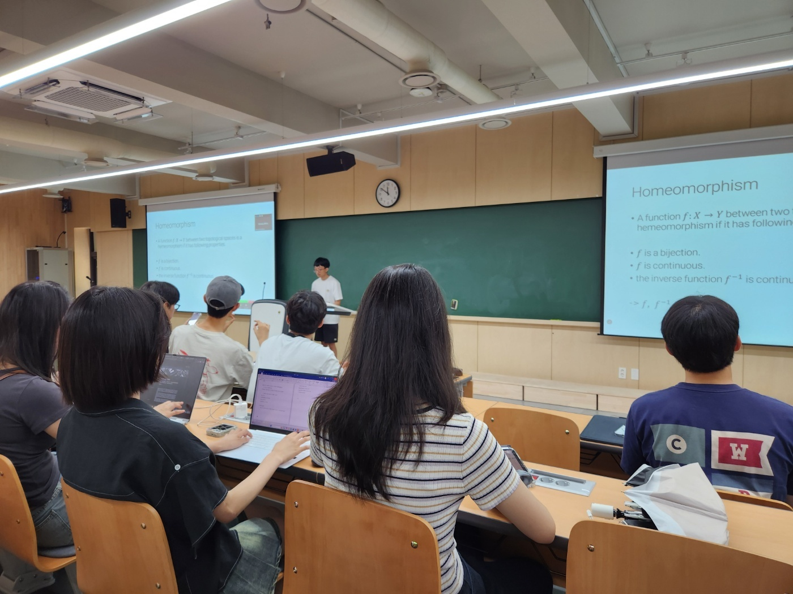
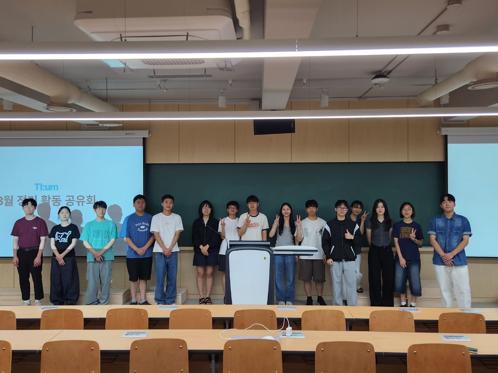
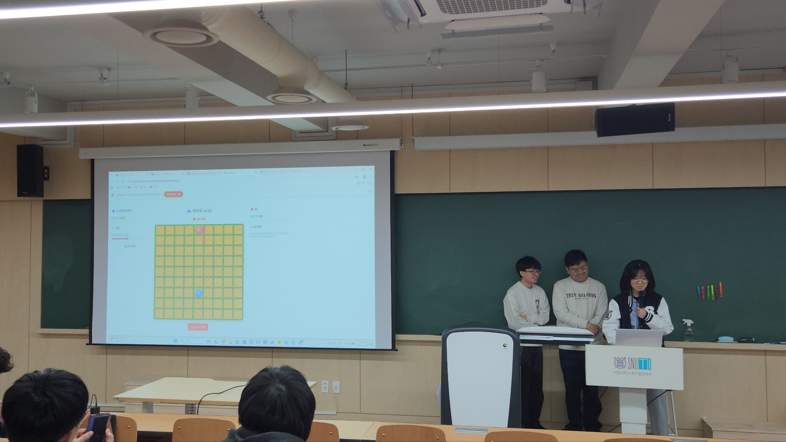
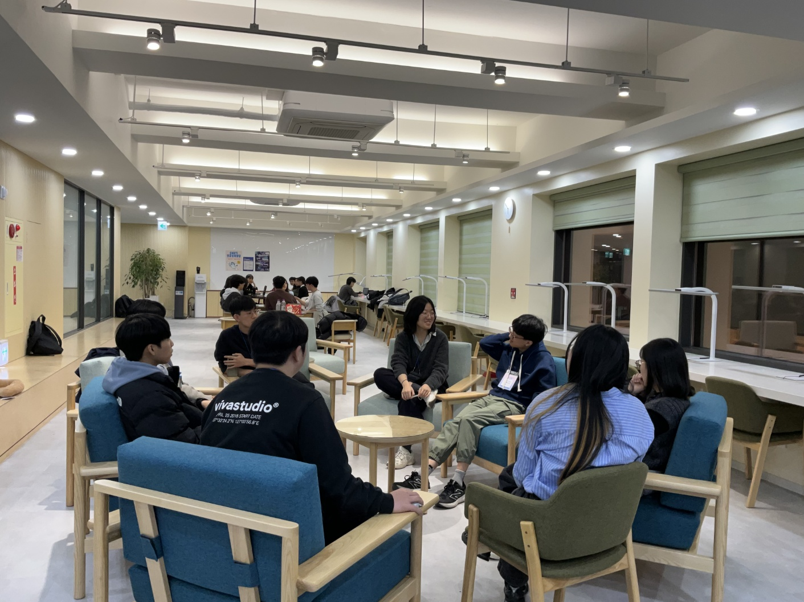
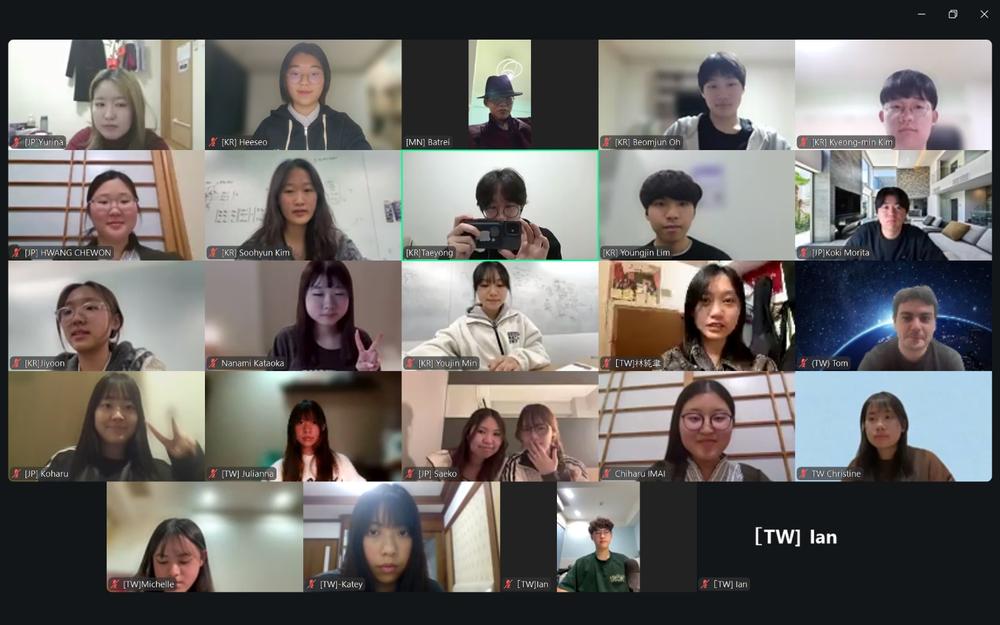

KODAMA
본 프로그램은 삿포로, 타이베이, 서울의 고등학생들이 특정 주제를 바탕으로
각국의 사회적 관습과 법률, 문화적 차이를 심도 있게 탐구하는 3개국 온라인 교류 프로젝트입니다.
9월부터 12월까지 총 3회의 워크숍을 통해
사전 학습과 인터뷰를 진행하며 서로의 삶과 다양성을 깊이 이해하는 시간을 갖습니다.
이후에는 일본 현지에서의 대면 교류를 통해, 국경을 넘어 서로를 더욱 직접적으로 경험하게 됩니다.
정기 학술 세미나
SNUTI 티:움 구성원은 누구나 매월 한 번씩 열리는 학술 세미나를 통해 본인이 관심 있는 주제를 약 30분 동안 발표할 수 있습니다.
정기 세미나와 장기 프로젝트를 통해 학생들이 학문적 탐구와 토론을 진행하는 프로그램으로 다양한 주제에 대해 발표, 토론, 연구 및 실질적 프로젝트 수행합니다.
전공과 상관없이 진행되며 구성원 각각이 갖고 있는 관심사와 생각들을 함께 공유하며 서로 다른 분야에 대한 통찰을 얻을 기회를 제공합니다.
학생들이 자유롭게 학문적 탐구를 시도하고, 정기 세미나, 연구 발표, 프로젝트 기반 학습 등을 통해
다양한 분야의 지식을 공유할 수 있도록 도와줍니다.
Subgroup 활동 공유회
자유로운 주제로 활동하며 그동안 활동했던 것에서 얻은 배움, 깨달음, 활동 이야기 등 다양한 형식으로 친구들에게 배움을 나눕니다.
Subgroups
Subgroups는 TI:um 내 학술 및 친목 도모를 목적으로 하는 프로그램입니다.
희망하는 단원들이 모여 하나의 주제로 자유로이 활동하는 소모임이 Subgroup입니다.
Subgroup의 활동은 다음과 같이 구성됩니다.
1. 티:움 내에서 공통된 관심사를 가진 단원들끼리 Subgroup을 구성하여 활동을 진행합니다.
2. 처음 시작하는 Subgroup은 TI:um 단원만을 대상으로 하나, 이후 Host가 희망할 시 첨단융합학부 전체를 대상으로 Fellowship을 모집하여 활동을 하게 됩니다.
3. 활동은 Subgroup Member가 자유롭게 기획하며, 학기 말과 방학 말에 활동 공유회를 하게 됩니다.
현재 활동 중인 Subgroup은 총 4그룹이 있습니다.
- 뇌 읽기 세미나
- 첨융인의 책
- 개발 프로그램 간담회
- MD Simulation Lab
회원 교류 활동
회원 간의 교류와 네트워크 형성을 위해
워크숍, 네트워킹 행사, 친목 프로그램을 진행합니다.
이를 통해 협력적인 공동체 문화를 형성하고
TI:um의 지속적인 발전을 도모합니다.






KODAMA
본 프로그램은 삿포로, 타이베이, 서울의 고등학생들이 특정 주제를 바탕으로 각국의 사회적 관습과 법률, 문화적 차이를 심도 있게 탐구하는 3개국 온라인 교류 프로젝트입니다.
9월부터 12월까지 총 3회의 워크숍을 통해 사전 학습과 인터뷰를 진행하며 서로의 삶과 다양성을 깊이 이해하는 시간을 갖습니다.
이후에는 일본 현지에서의 대면 교류를 통해, 국경을 넘어 서로를 더욱 직접적으로 경험하게 됩니다.
정기 학술 세미나
SNUTI 티:움 구성원은 누구나 매월 한 번씩 열리는 학술 세미나를 통해 본인이 관심 있는 주제를 약 30분 동안 발표할 수 있습니다. 정기 세미나와 장기 프로젝트를 통해 학생들이 학문적 탐구와 토론을 진행하는 프로그램으로 다양한 주제에 대해 발표, 토론, 연구 및 실질적 프로젝트 수행합니다. 전공과 상관없이 진행되며 구성원 각각이 갖고 있는 관심사와 생각들을 함께 공유하며 서로 다른 분야에 대한 통찰을 얻을 기회를 제공합니다.
학생들이 자유롭게 학문적 탐구를 시도하고, 정기 세미나, 연구 발표, 프로젝트 기반 학습 등을 통해 다양한 분야의 지식을 공유할 수 있도록 도와줍니다.
Subgroup 활동 공유회
자유로운 주제로 활동하며 그동안 활동했던 것에서 얻은 배움, 깨달음, 활동 이야기 등 다양한 형식으로 친구들에게 배움을 나눕니다.
Subgroups
Subgroups는 TI:um 내 학술 및 친목 도모를 목적으로 하는 프로그램입니다.
희망하는 단원들이 모여 하나의 주제로 자유로이 활동하는 소모임이 Subgroup입니다.
Subgroup의 활동은 다음과 같이 구성됩니다.
1. 티:움 내에서 공통된 관심사를 가진 단원들끼리 Subgroup을 구성하여 활동을 진행합니다.
2. 처음 시작하는 Subgroup은 TI:um 단원만을 대상으로 하나, 이후 Host가 희망할 시 첨단융합학부 전체를 대상으로 Fellowship을 모집하여 활동을 하게 됩니다.
3. 활동은 Subgroup Member가 자유롭게 기획하며, 학기 말과 방학 말에 활동 공유회를 하게 됩니다.
현재 활동 중인 Subgroup은 총 4그룹이 있습니다.
- 뇌 읽기 세미나 - 첨융인의 책 - 개발 프로그램 간담회 - MD Simulation Lab
회원 교류 활동
회원 간의 교류와 네트워크 형성을 위해 워크숍, 네트워킹 행사, 친목 프로그램을 진행합니다.
이를 통해 협력적인 공동체 문화를 형성하고 TI:um의 지속적인 발전을 도모합니다.